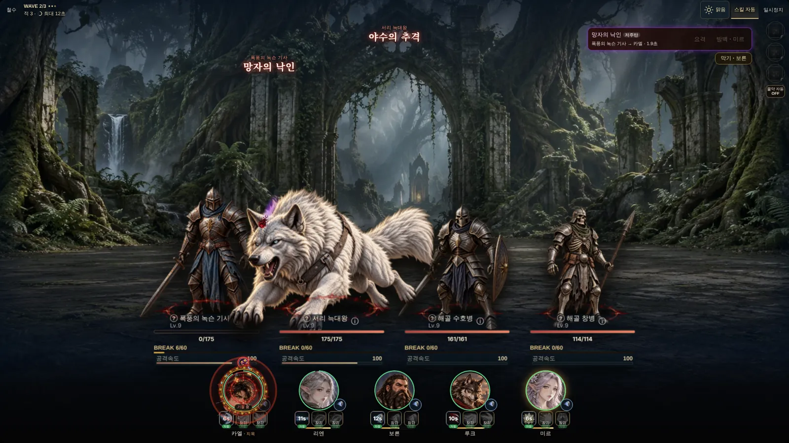

전열 실시간 전투Real-time front-line battles
다섯 동료가 전열에 서서 적과 실시간으로 맞붙습니다. 공격은 자동으로, 기술은 자동으로 두거나 준비되는 순간 직접 눌러 쓸 수 있습니다.
Five companions hold the line against enemies in real time. Attacks are automatic; skills can be left on auto or fired by hand the moment they're ready.
- 증원과 급습 싸우는 도중 적이 몰려오거나 뒤에서 급습합니다.
- Reinforcements and ambushes Enemies pour in mid-fight or strike from behind.
- 정예·네임드 몬스터 특수 능력을 가진 강적, 잡으면 현상금과 도감 기록.
- Elites and named monsters Tough foes with special traits, bounties and bestiary entries.
- 방어 반응 날아오는 마법을 막기, 방벽, 완벽 방어로 받아칩니다.
- Defensive reactions Block, barrier or perfect-guard incoming spells.